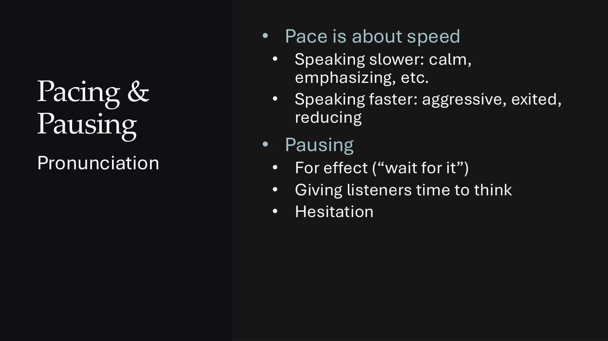
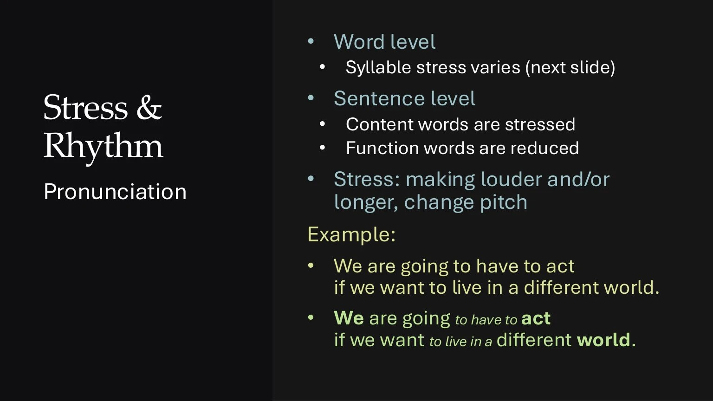

KE00DA03 大学英语 · 第 08 / 10 讲
第 9 讲 · 语音诊所：重音、语调、最小对立与录音交付
Pronunciation Clinic: Stress, Intonation, Minimal Pairs and Recording Workflow
所属章节：未分章
资料来源 · 4 项 / 已附 0 项
pronunciation_recap_3015.pdf未附原文件Recording_instructions.pdf未附原文件Meeting9_EHUT_3015.pdf未附原文件ASSIGNMENT 2 Pronunciation Test - page.txt未附原文件
未附文件仅列原始名称；版本与核对日期由维护者登记。
本节定位
本讲把 2026-11-21 归档的三份语音材料（pronunciation_recap_3015.pdf、Recording_instructions.pdf、Meeting 9 幻灯片的语音部分）整合成一节。它直接服务 11 月 18 日的 ASSIGNMENT 2 发音测试与 Assignment 3 的口语交付。
学完本节你应当能够：
- 用重音规则读出生词的重音位置（-ic / -tion / -graphy / 双音节动词）
- 听辨并自主纠正 8 组最小对立（minimal pairs）
- 用重音移动与语调改变同一句话的意思
- 按 prosody（内容词重读、功能词弱化）读出自然节奏
- 用 Camera / Teams / Zoom / Vocaroo 录制并交付链接
前置：第 2 讲的朗读停顿、第 8 讲的作业通道。后续：Assignment 3 演讲的口语呈现。
一、Prosody：语言的「音乐」
说话时并非每个词都一样清楚：content words（内容词）被强调——音高抬高、时长拉长；function words（功能词）被弱化——重音降低、语速加快，英语词之间还会连读（linked），个别词甚至听不见。中文母语者的通病是每个音节等长等重，听起来「平」。
1.1 Pace 与 Pausing
- Pace = 语速：慢下来表示冷静、强调；加快表示激动、进攻或想让内容一带而过。
- Pausing = 停顿：为效果（"wait for it"）、给听众思考时间、犹豫。
1.2 Stress 与 Rhythm
句层：内容词重读（更响/更长/变音高），功能词弱读。同一句两种读法意思不同：We are going to have to act if we want to live in a different world.——重读 act 是「必须行动」，重读 different 是「世界必须不同」。
1.3 重音规则表（读新词就靠它）
| English | 中文 | 说明 / 例句 |
|---|---|---|
| 双音节名词/形容词 | 第一音节 | engine /ˈen.dʒɪn/ · motor · coated · narrow |
| 词尾 -ic | 倒数第二音节 | elastic · automatic /ˌɑː.t̬əˈmæt̬.ɪk/ |
| 词尾 -sion / -tion | 倒数第二音节 | extension /ɪkˈsten.ʃən/ · institution |
| 词尾 -graphy / -logy / -nomy | 倒数第三音节 | geography · technology /tekˈnɑː.lə.dʒi/ · economy |
| 词尾 -cy / -ty / -al | 倒数第三音节 | democracy · electricity · critical /ˈkrɪt̬.ɪ.kəl/ |
| 双音节动词 | 最后音节 | require /rɪˈkwaɪr/ · decide /dɪˈsaɪd/ |
| 带前缀的词 | 主干词首音节 | inaccurate /ɪnˈæk.jɚ.ət/ · recharge · unload |
ˈ 标在重读音节前，二级重音是 ˌ。1.4 同形异读（Homographs）与缩略语
| English | 中文 | 说明 / 例句 |
|---|---|---|
| present（n. 礼物 / v. 呈现） | /ˈprez.ənt/ vs /prɪˈzent/ | 重音位置决定词性：名词读前，动词读后 |
| record（n. 记录 / v. 录制） | /ˈrek.ɚd/ vs /rɪˈkɔːrd/ | 录音测试里 record 多作动词，读后重音 |
缩略语有的逐字母读、有的当单词读：
| English | 中文 | 说明 / 例句 |
|---|---|---|
| LED | /ˌel.iːˈdiː/ 逐字母 | |
| CPU | /ˌsiː.piːˈjuː/ 逐字母 | |
| USB | /ˌjuː.esˈbiː/ 逐字母 | |
| CAD | /kæd/ 当单词读 |
1.5 Emphasis：重音移位改变句义
同一句 I don't like the new operating system. 重读不同词，句义不同：重读 I = 「（别人喜欢）我不喜欢」；重读 don't = 强烈否认；重读 like = 「不喜欢但也不是讨厌」；重读 new = 「旧的还行，新的不行」；重读 operating system = 「不是硬件问题」。
1.6 Pitch 与 Intonation
- 降调 falling：陈述、确定。
- 升调 rising：疑问、迟疑。
- 升+降 rise-fall：强烈情感。
- 平调 flat：未说完、保留意见。
- 示例：You like broccoli 四种语调 = 陈述 / 疑问 / 惊讶 / 试探。
二、Minimal Pairs：一个音换掉，意思全变
最小对立对是发音自测的最小单元——只改一个音，意思就变。
| English | 中文 | 说明 / 例句 | |
|---|---|---|---|
| /æ/ – /e/ | man – men /'mæn/ – /'men/ | had – head；sad – said | I saw three men. One man had a hat on his head. He said he was sad. |
| /ɪ/ – /iː/ | ship – sheep /'ʃɪp/ – /'ʃiːp/ | sit – seat；live – leave | They ship the sheep from Wales. Take a seat and sit down. |
| /t/ – /θ/ | tree – three /'triː/ – /'θriː/ | tank – thank；mat – math | The tree has three apples. |
| /v/ – /w/ | vet – wet /'vet/ – /'wet/ | vile – while；vary – wary | The vet didn't like the wet dog. |
| /r/ – /w/ | run – one /'rʌn/ – /'wʌn/ | rate – wait；rich – witch | If you wait, I will rate your work. |
| /r/ – /l/ | feel – fear | full – four；fewer – fuel | He had fewer fuel canisters than us. |
| /ŋk/ – /ŋ/ | sink – sing /'sɪŋk/ – /'sɪŋ/ | wink – wing；rink – ring | Just wink if you want another wing. |
| /n/ – /ŋ/ | win – wing /'wɪn/ – /'wɪŋ/ |
2.1 课程累计「你的词」（Your Words）
易混对（minimal-ish）：
| English | 中文 | 说明 / 例句 |
|---|---|---|
| place – palace | /'pleɪs/ – /'pælɪs/ | |
| uncle – ankle | /'ʌŋkəl/ – /'æŋkəl/ | |
| wheel – while | /'wiːl/ – /'waɪl/ | |
| screen – scream | /'skriːn/ – /'skriːm/ | |
| word – ward – world | /'wɜːd/ – /'wɔːd/ – /'wɜːld/ | |
| flower – flow – flour | /'flaʊər/ – /'fləʊ/ – /'flaʊər/ | |
| one – own – won | /'wʌn/ – /'əʊn/ – /'wʌn/ | |
| quiet – quite | /'kwaɪət/ – /'kwaɪt/ |
同音词（homophones）：
| English | 中文 | 说明 / 例句 |
|---|---|---|
| buy – by – bye | /'baɪ/ | |
| see – sea – C | /'siː/ | |
| two – too – to | /'tuː/ | |
| board – bored | /'bɔːd/ | |
| there – their – they're | /'ðeər/ | |
| break – brake | /'breɪk/ | |
| dear – deer | /'dɪər/ | |
| no – know | /'nəʊ/ |
其他易错：change /'tʃeɪndʒ/ vs chance /'tʃæns/；nature → natural 的重音位移；thorough /'θʌrəʊ/；dairy /'deəri/（勿读成 diary）。
2.2 绕口令十条（Tongue Twisters）
- Shake rattle and roll
- All aluminum alloy
- Mouse mouth month
- Buried berry barrier
- Bad Bed Bug
- World work week
- Thumb through thunderstruck
- Simultaneously similar
- Black blood blade
- Specific squirrel salary
三、录音交付工作流（Recording instructions，2026-11-20）
视频作业三选一：Windows Camera（只录摄像头，不录屏）；Teams（Calendar → Meet now → Start recording，录完在 Chat 里拿链接下载）；Zoom（桌面端，Share screen + Record，退出会议后自动转码存 Documents/Zoom 为 .mp4）。纯音频用 Vocaroo（网页版可直链分享）或 Windows Voice Recorder。最终交付 = 上传云盘 → 分享链接给老师。
1.7 韵律与重音幻灯片原图（Meeting 9）
重音规则、重读移位、语调这些概念配合原版幻灯片看更直观——尤其重音规则表（Slide 26）建议打印贴墙。





①/θ ð 咬舌音读成 /s z/：three → 「si」。纠正：舌尖轻触上门齿，气流从舌缘出；②词尾辅音吞掉或加元音：work → 「worker」。中文音节无辅音尾，读的时候把词尾辅音单独收一下拍；③声调迁移：中文靠字调表达，英语靠句调——单词内部不要「跑调」，整句再起伏。发音测试的三道题正对着这三个坑，考前各练 5 遍最小对立句。
| English | 中文 | 说明 / 例句 |
|---|---|---|
| prosody | 韵律 | The music of language: stress, pace, pitch, rhythm. |
| content word | 内容词 | Carries meaning; gets stressed. Nouns, verbs, adjectives. |
| function word | 功能词 | Grammar glue; gets reduced. of, the, to, a. |
| syllable stress | 音节重音 | Which syllable is loudest: tech-NO-lo-gy. |
| minimal pair | 最小对立对 | Two words differing in one sound: ship/sheep. |
| homophone | 同音词 | Same sound, different spelling: buy/by/bye. |
| homograph | 同形异音词 | Same spelling, different sound & meaning: record. |
| intonation | 语调 | The melody of a sentence: rising for questions. |
| pitch | 音高 | How high or low the voice is. |
| tongue twister | 绕口令 | She sells sea shells — articulation drill. |
| IPA | 国际音标 | ˈ marks the stressed syllable: /tekˈnɑː.lə.dʒi/. |
| Vocaroo | 网页录音工具 | Records audio and gives a shareable link. |
读出 technology 的重音位置。
解：① 认词尾：-logy → 规则「-graphy/-logy/-nomy 倒数第三」。② 数音节：tech-no-lo-gy 共 4 个 → 重读第 2 个。③ 验证 IPA：/tekˈnɑː.lə.dʒi/，ˈ 在 no 前。答：tech-NO-lo-gy。
总是把 sheep 读成 ship，怎么自测？
解：① 定位对立音：/ɪ/（短）vs /iː/（长）。② 口型：/ɪ/ 松、嘴角不拉；/iː/ 紧、嘴角向两侧拉长。③ 最小对立句练习：They ship the sheep from Wales.（一句含两词，交替读）。④ 录音回听：ship 的元音是否更短更松。
把 You like broccoli 分别读成陈述与疑问。
解：陈述 = 全句降调（broccoli 上降到低点）；疑问 = broccoli 后升调。升级版：rise-fall（升后骤降）= 「居然喜欢？」的惊讶。
标出重音：analysis, circumference, construction, diagonal, diameter, direction, efficient, equipment, accelerate, accurate, reinforce, terminology。
参考答案
-ic / -tion / -ity 系：construc-TION, direc-TION, effi-CIENT, accelE-rate（动词末音节）, accu-RATE（形容词第一音节——与 accelerate 对照！）。-graphy/-logy：termi-NO-lo-gy, geo-LO-gy。analysis /əˈnæl.ə.sɪs/ 重音在第二音节。equipment 重音在首音节。reinforce 重音在第二音节。——前后缀只决定重音「落点区」，最终以 IPA 校验。
每组读三遍：I saw three men / The tree has three apples / Just wink if you want another wing。
要点
三组分别是 /θ–t/、/θ–t/、/ŋ–ŋk/。读 wink/wing 时体会舌根是否抵住软腭（ŋk 有爆破收尾）。
Whose woods these are I think I know. / His house is in the village though; / He will not see me stopping here / To watch his woods fill up with snow.
步骤
- 先默读定意：哪几个词承载你要的意思（know? snow? stopping?）
- 标记强调词与弱读词
- 按意群朗读，注意 pace 与 pausing
- 换一种理解再读一遍（如「犹豫」版：慢速+平调）
从 10 条里选 3 条，慢-中-快三档各读一遍，录音对比。
目标
快档不塌音：每个 target sound（如 aluminum 的 /l/、berry 的 /e–æ/）仍然可辨。
Meeting 9 布置：把 elevator pitch 按三种语气交付（见第 4 讲练 2），本讲补一个「Unsure」版本要点。
要点
Unsure = 句尾升调频繁 + 语速偏慢 + 填充词（um, kind of）增多。对比 Confident 版本（降调收尾、零填充）录在同一段音频里，听辨差异。
必考 重音规则三大家族（-ic/-tion、-graphy/-logy/-nomy、双音节动词）——发音测试的高频题源。
必考 最小对立 /ɪ–iː/ 与 /æ–e/：中文母语者最大的两个坑，测试必查。
易错 homograph 动名异读（present / record）——读错意思就答错。
易错 /v–w/ 与 /r–l/：vet–wet、feel–fear，需要口型与舌位刻意区分。
易错 缩略语 CAD 当词读 /kæd/，LED/CPU/USB 逐字母——不能混。
进阶 prosody 自然度：内容词重读 + 功能词弱化 + 连读，是把「正确」读到「地道」的一层。
录音交付五步（任何工具通用）
- 选工具：视频 → Camera / Teams / Zoom；纯音频 → Vocaroo / Voice Recorder
- 录制：Zoom 记得桌面端 + Share screen；Teams 用 More actions 里的 Start recording
- 落盘：Zoom 退出会议后存 Documents/Zoom（.mp4）；Teams 从 Chat 链接下载
- 上传：传到云盘（SharePoint 等）
- 分享：把链接（不是文件）发给老师
发音自测四步（考前 10 分钟）
- 过一遍「你的词」三张清单（易混对 / 同音词 / 其他）
- 每对用最小对立句读两遍
- 抽查 5 个 -tion/-logy 词的重音
- 录 30 秒回听：content words 是否真的重读了
源文件对应
| English | 中文 | 说明 / 例句 |
|---|---|---|
| pronunciation_recap_3015.pdf | moodle-updates/2026-11-21/linked/32632/link-09-…（moodle-updates/2026-11-21/text/32632/同名 .txt） | Minimal pairs 全部 8 组、Your Words 三清单、绕口令十条 |
| Meeting9_EHUT_3015.pdf | moodle-updates/2026-11-21/linked/32632/（slides 33-37 即此文件） | Prosody / pace / stress rules / homographs / 缩略语 / emphasis / pitch & intonation / Frost 诗 / 三语气 pitch |
| Recording_instructions.pdf | moodle-updates/2026-11-21/linked/32632/link-12-… | Camera / Teams / Zoom / Vocaroo 录音流程与交付方式 |
| ASSIGNMENT 2 Pronunciation Test - page.txt | moodle-updates/2026-11-21/text/32632/ | 发音测试的提交窗口与要求（11-18） |
| 补充拓展 | — | 重音规则表为幻灯片原内容的整理；语调四种类型为 recap + Meeting 9 合并表述 |